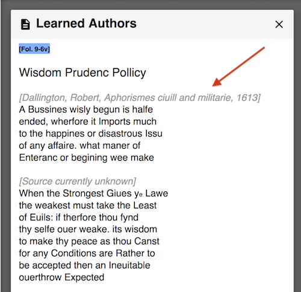
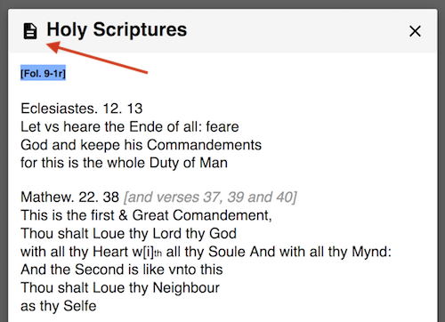

While early modern manuscripts are increasingly available online in facsimile, there are few digital editions of commonplace books online, let alone remediated editions of commonplace books compiled or written by women. This project’s most immediate relatives are DEx, a database of dramatic extracts found in early modern manuscripts, edited by Laura Estill and Beatrice Montedoro, and Reading the Commonplace, a digital edition of a Romantic-era Philadelphia woman’s commonplace book, edited by Cassidy Holahan. We examined these projects in the beginning stages of our own work. Though less related, we have also turned to Gabriela Aceves Sepúlveda’s [Re]Activate Mama Pina’s Cookbook, a creative remediation of a manuscript cookbook, for inspiration. It provides videos of a hand thumbing through the book and allows users to write digitally on blank pages in order to simulate and preserve the way the repertoire of uses to which the cookbook was put. During our research, we have made extensive use of Perdita, both the frames-based catalogue and the database of digitized microfilm, which describes in detail a variety of early modern women’s manuscripts.
Despite the surprising lack of digital editions, the commonplace book, more than any other genre of writing, seems well suited to a digital format, since, by its very structure, it is a linked web of fragments that have been “coded” and “marked up” with metadata. For this reason, we have put much thought and planning into which tools to use and how design this digital edition.
After an environmental scan of existing projects and tools, we landed on Digital Mappa (DM) as our platform. Originally designed to annotate digital editions of early maps, DM is an open-source web application that allows designers to highlight, annotate, and link digital files, both text and image. These files may be opened and viewed side-by-side as tiled windows, enabling easy comparison between linked documents. Because we have been most interested in tracking the relationship between Collet’s excerpts and their sources, the comparison and annotation features of DM offered a major benefit to this project. The tradeoff is that, because DM was designed for documents like maps, it is intentionally less “codex”-like in how it stores and relates images, making Collet’s manuscript seem less like a book. The result is a much-remediated digital edition that focuses more on variance and relationships between texts than on simulating the physical experience of reading Collet's manuscript.
Co-editor Zoe Braccia transcribed the majority of this manuscript over three days at The Morgan Library in the summer of 2018. Co-editor Whitney Trettien checked the transcription against reference photos that she had taken earlier that year. We have adhered to a semi-diplomatic transcription, remaining faithful to Collet’s original spelling, punctuation, and layout while noting all deletions, additions, and abbreviations. Following standard practice, any text in brackets, like the foliation numbers, indicates an addition not present in the original manuscript. Two versions of the entire transcription (the raw, diplomatic transcription, as well as the expanded (sourced) version) in full can be found in the folder titled “FULL TRANSCRIPTION.”
In the digital edition, some additions have been made to the text. For instance, one goal of this edition is to make visible Collet’s sources; however, she does not include them in the secular section and sometimes misses them in the scriptural section of the commonplace book. Therefore we have included these secular sources, when known, in bracketed gray text above each excerpt.

Blank pages are not included in the transcription documents, but can be found in the facsimile images. The title pages (at the beginning and in the middle of Collet’s work) are attached to the topic text that comes afterward in order to preserve the fluidity of reading, and to retain some aspects of Collet’s original structure.
We have also used color-coded highlights to draw attention to noteworthy moments in the text, including changes between Collet’s source and its copy in the manuscript, misattributions, or other points of variance. Note that for biblical excerpts, we have used the King James version as our default.
It is impossible to know if these alterations are done purposefully or accidentally; and while we have used the highlights to emphasize these deviations, we leave it to the reader to interpret Collet’s intentions, or lack thereof.
In 2020, the Morgan Library photographed the entire manuscript at our request. The full facsimile may be accessed in the original page order through the “FULL FACSIMILE” folder. We have also noted significant features of the manuscript on the facsimile page images.
Accessing all linked elements of the digitized manuscript is simple. Clicking on the color highlights brings one to other elements of the manuscript (as stated above). Vice versa, clicking on the notepad icon in the upper lefthand corner of the facsimile images, digitized souces, or footnote documents will link back to the original transcription document.

While we remained faithful to Collet’s text in our transcription, translating her codex to Digital Mappa required that we make some changes to the book’s organization and structure, as mentioned above. We did so in order to promote accessibility and to advance scholarly analysis, our two main reasons for producing this edition.
For example, in the original manuscript, the biblical verses are contained in the first half of the commonplace book, and the secular sources in the second half. This division probably served an important function for Collet, who saw scriptural wisdom and advice as on a different plane from that written by mortal human authors. However, it hinders the kind of comparative analysis we hope to foment with this edition. Therefore, we have included the scriptural and secular sections of each topic in a single folder, with each contained in a separate document. In this way, readers can open the two sections — separated by many pages in the codex — next to each other.
At the same time, because scriptural and secular topics are contained in separate documents, readers can also read across topics in the same section or proceed linearly through the biblical and non-biblical portions of the manuscript. It is our hope that remediating her structure in this way will prompt new questions about variants across and between different sections and topics.
As mentioned above, the topics in the original manuscript follow roughly the same order in the scriptural and secular sections, running from positive traits like wisdom to fear, shame, and death. However, there is variance, sometimes significant, in the precise headings that Collet uses, and some topics appear only in one section or another, as this table makes evident:
| Scriptural | Secular | Digital Edition Folder |
|---|---|---|
| Wisdome | Wisdom, Prudence, Policy | |
| Wisdome & Prudenc | Wisdom, Prudence, Policy | |
| Wisdom Prudenc Pol | Wisdome Prudenc Pollicy | Wisdom, Prudence, Policy |
| Wisdom in Speach & Sylenc | Wisdome in Speach & Si | Wisdom in Speech and Silence |
| Justice | Justice | Justice |
| Temperanc | Temperanc | Temperance |
| Fortitude | fortitude | Fortitude |
| obedienc & Honour to Parents | obedienc to Parents [flourish] S | Obedience & Honor to Parents |
| Education of Children | Education of Children | |
| Counsell | Counsell | Counsel |
| Friendship | friendship | Friendship |
| Charity or Loue | Charity or Loue | Charity or Love |
| Charity in Almes | Charity in Alms | |
| Liberality Almes | Mercifullnes Liberallity | Mercifullness & Liberality |
| Meeknes Gentlenes Curtisy | Courtisy Gentlenes Meknes | Courtesy, Gentleness, Meekness |
| Thankfullnes | Thankfullnes | Thankfulness |
| Humility Patienc | Patienc Humility | Humility & Patience |
| Truth in worde | Truth of Word | Truth in Word |
| Industry frugality | Industry frugality | Industry & Frugality |
| Hope Confidens Security | Hope Confidenc | Hope, Confidence, Security |
| Pleasur Mirth Content | Happines Content Mirth | Happiness/Pleasure, Mirth, Content |
| Pleasur Content | Happiness/Pleasure, Mirth, Content | |
| Honour Dignity | Honour Dignity | Honor & Dignity |
| Wealth Riches Prosperity | Wealth Riches Prosperity | Wealth, Riches, Prosperity |
| fayme | fayme flattery Reproofe | Fame, Flattery, Reproof |
| flattery Reproofe | flattery Reproofe | Fame, Flattery, Reproof |
| Folly Selfe Conceit | folly Selfe Conceit | Folly/Self-Love & Self-Conceit/Conceit |
| Self loue & Conceit | Folly/Self-Love & Self-Conceit/Conceit | |
| Adversity pouerty Greife | Pouery Greife discontent | Adversity, Poverty, Grief, Discontent |
| Contention Strife Rashnes | Contention Strife Rashnes | Contention, Strife, Rashness |
| feare Shame | feare Shame | Fear & Shame |
| Shame | Fear & Shame | |
| Error Suspition Passion | Pasion: Error Suspition: Jealousy | Error/Doubt, Suspicion, Passion/Jealousy |
| Error: Suspition: Jealousy: | Error/Doubt, Suspicion, Passion/Jealousy | |
| Doubt: Suspition Jealousy | Error/Doubt, Suspicion, Passion/Jealousy | |
| Doubt Suspition | Error/Doubt, Suspicion, Passion/Jealousy | |
| Custom & Customs | Custom & Customs | |
| Pryd Boasting | Pryd Boasting vaine Glory | Pride, Boasting, Vain-Glory |
| Couetiousnes | Covetousness | |
| Wrath Anger | A Discription of Anger | Wrath, Anger/Malice, Envy, Revenge |
| Enuy Mallice Reveng | Wrath malice Envy Reveng | Wrath, Anger/Malice, Envy, Revenge |
| Swearing | Envy Mallice Reveng | Swearing |
| Death | Death | Death |
Because the digital edition organizes excerpts by topics, rather than section, it was necessary that we streamline these names -- otherwise, some folders would only contain scriptural or secular excerpts, which would be separated from their logical neighbors. Therefore we combined some similar topics to create sensible clusters. For instance, what Collet marks as “Wisdom,” “Wisdom Prudence,” and “Wisdom Prudence Policy” has become “Wisdom, Prudence, Policy” in the digital edition. We also standardized the spelling for these folder titles for accessibility purposes. Readers seeking Collet’s original spelling and structure can always find it in the documents in each folder, which contain diplomatic transcriptions for that section and links to facsimile pages.